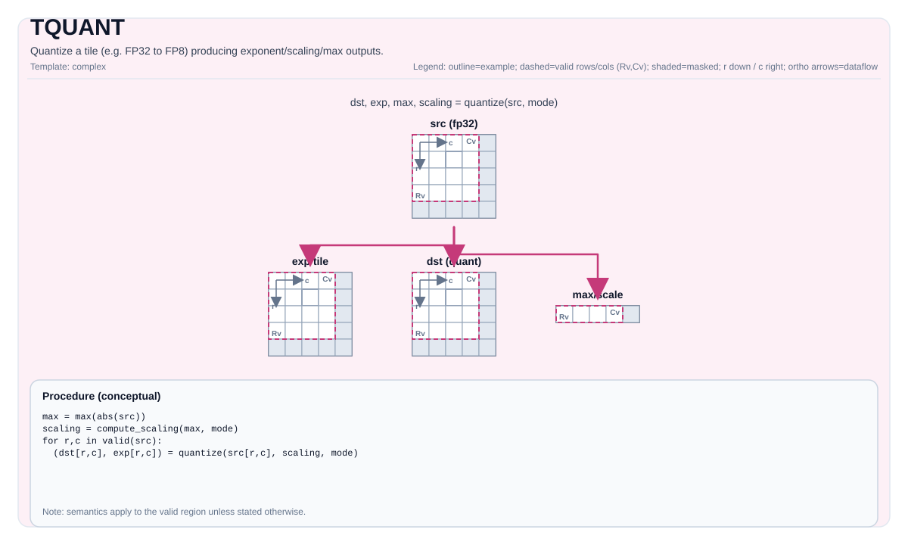

TQUANT DN — Axis-0 Grouped Quantization and DN→ZZ¶
Tile Operation Diagram¶

Introduction¶
ND ("normal direction") is the default MX grouping: groups of 32 along axis 1 (columns). DN denotes the transposed-style grouping along axis 0 (rows) — groups of 32 consecutive rows. Both modes produce RowMajor tiles; "DN"/"ND" refers only to the grouping axis, not the storage layout. DN is used in FlashAttention where the softmax output (P matrix) has its natural grouping along the M (row) dimension.
After DN quantization, the FP8 data is converted to NZ via the stock TMOV(ND→NZ) and
the E8M0 exponents are converted to ZZ via the new TMOV<grp_axis=0>(DN→ZZ).
C++ Intrinsic¶
The primary interface is the <grp_axis, mx_alg> template:
template <int grp_axis, auto mx_alg, typename TileDataOut = void, typename TileDataSrc = void,
typename TileDataExp = void, typename TileDataMax = void, typename TileDataScaling = void,
typename... WaitEvents>
PTO_INST RecordEvent TQUANT(TileDataOut &dst, TileDataSrc &src, TileDataExp *exp, TileDataMax *max,
TileDataScaling *scaling, WaitEvents &... events);Parameters¶
| Parameter | Description |
|---|---|
grp_axis |
0 = DN (groups on axis 0 / rows); 1 = ND (groups on axis 1 / columns, default) |
mx_alg |
Combined destination-format + scale-algorithm tag (MxQuantAlg enum) |
dst |
Output FP8/FP4 tile (RowMajor, same shape as src) |
src |
Input fp32/bf16/fp16 tile (RowMajor M×N) |
exp |
Output E8M0 exponent tile: shape M̂×N for DN, M×Γ for ND |
max |
Scratch per-group abs-max tile |
scaling |
Scratch per-group scaling tile |
MxQuantAlg values¶
enum class MxQuantAlg {
OcpMxFp8E4M3 = 0, // MXFP8 E4M3 + OCP scale
NvMxFp8E4M3 = 1, // MXFP8 E4M3 + NV scale
OcpMxFp4E2M1 = 2, // MXFP4 E2M1 + OCP scale
NvMxFp4E2M1 = 3, // MXFP4 E2M1 + NV scale
};Backward compatibility: the old
TQUANT<QuantType::MXFP8, ...>interface is retained unchanged. The<grp_axis, mx_alg>form is the preferred interface going forward; nothing is removed.
DN Output Shapes¶
For a source tile M×N with M̂ = M/32, Γ = N/32:
| Output | ND (grp_axis=1) |
DN (grp_axis=0) |
|---|---|---|
| FP8/FP4 data | M×N RowMajor |
M×N RowMajor (identical) |
| E8M0 exponent | M×Γ |
M̂×N |
| Max / Scaling | M×Γ |
M̂×N |
The data tile is identical between ND and DN (same (r,c) addresses); only the
exponent/max/scaling tile shapes differ. Therefore TMOV(ND→NZ) on the data is
reused unchanged. Only the exponent needs a new transform: DN→ZZ.
Cube Consumption Contract¶
Verified from A5 sim logs (LOAD_2Dv2 + LOAD_MX_2Dv2 + MMAD_MX):
FP8 data → L0A/L0B as NZ fractal (LOAD_2Dv2 Dtype:B8)
E8M0 scale → L0AMX/L0BMX as ZZ fractal (LOAD_MX_2Dv2 Dtype:B16)
MMAD_MX pairs them by fractal byte position.The cube always wants data in NZ and scale in ZZ, regardless of the quantization group
axis. The only difference for DN-quantized operands is the exponent tile shape
(M̂×N vs M×Γ) and the transform applied (DN→ZZ vs ND→ZZ).
DN→ZZ Transformation¶
Mathematical Proof¶
For DN exponent tile E_DN[hat_r][c] of shape M̂×N (RowMajor, flat hat_r·N + c):
Theorem (DN→ZZ = transpose ⊕ ND→ZZ):
with c_b ∈ [0, N/16), p ∈ [0, M̂/2), q ∈ [0,16), δ ∈ {0,1}.
Corollary (direct source index):
Corollary (no gather needed): For fixed (c_b, p), the 32 bytes of the ZZ box are
sourced from two contiguous 16-byte runs: E_DN[2p][16c_b:16c_b+16] and
E_DN[2p+1][16c_b:16c_b+16]. Zipping them via vintlv yields the qδ-interleaved
order the ZZ fractal requires. Hence DN→ZZ is cheaper than ND→ZZ (contiguous loads, no
vgather2/BLK/E2B).
Alignment Constraints¶
N mod 16 = 0(always satisfied sinceN mod 32 = 0).M̂ mod 2 = 0, i.e.M mod 64 = 0(for δ-pairing). Stricter than ND→ZZ'sM mod 16 = 0.M = 32(M̂ = 1): degenerate identity (no pairs).
Relationship to vshls+vor¶
The FA fused softmax macro's vshls+vor byte-pack is, at M̂=4, N=64 only,
mathematically identical to the transpose step of this recipe. It cannot generalize
(requires M̂≤4 to fit a B32 word, and N≤64 for single-VL). TMovDnTo2Zz is the
general replacement.
Implementation notes¶
TMovDnTo2Zz uses vlds + vintlv + vsstb (block-strided scatter, blockStride = numPairs)
with CreatePredicate auto-decrement for the tail — no scalar computation, no branching, no
static predicates. The vsstb 5-arg POST_UPDATE form is required; the 4-arg form
interprets offset as a source-register offset, not the stride config. See
include/pto/npu/a5/TMov.hpp (GenerateB8IndicesDN2ZZToUB).
TMOV Interface¶
DN→ZZ (new)¶
template <int grp_axis, typename DstTileData, typename SrcTileData, typename TmpTileData, typename... WaitEvents>
PTO_INST RecordEvent TMOV(DstTileData &dst, SrcTileData &src, TmpTileData &tmp, WaitEvents &... events);TMOV<0>(zzTile, e8DnTile, tmpTile) selects TMovDnTo2Zz. The stock
TMOV(zzTile, e8Tile, tmpTile) (without <grp_axis>) remains ND→ZZ (grp_axis defaults to 1).
ND→NZ (data, unchanged)¶
TMOV(fp8NZTile, fp8Tile); // stock 2-arg ND→NZ; correct for DN data (RowMajor, identical addresses)Pipeline (full DN flow)¶
src[M×N] (fp32)
──TQUANT<0, MxQuantAlg::OcpMxFp8E4M3>──▶ fp8[M×N] + e8[M̂×N] (DN exponent)
──TMOV(ND→NZ)──────────────────────────▶ fp8NZ
──TMOV<0>(DN→ZZ)───────────────────────▶ e8ZZ
──feed to cube MMAD_MX──────────────────▶ C[M×N]Examples¶
// DN quantize (groups on axis 0)
TQUANT<0, MxQuantAlg::OcpMxFp8E4M3>(fp8Tile, srcTile, &e8DnTile, &maxTile, &scalingTile);
// Data ND→NZ (stock)
TMOV(fp8NZTile, fp8Tile);
// Exponent DN→ZZ (new)
TMOV<0>(e8ZzTile, e8DnTile, tmpTile);See tests/npu/a5/src/st/testcase/tquant_dn/ for a complete ST example (Stages 1–3).